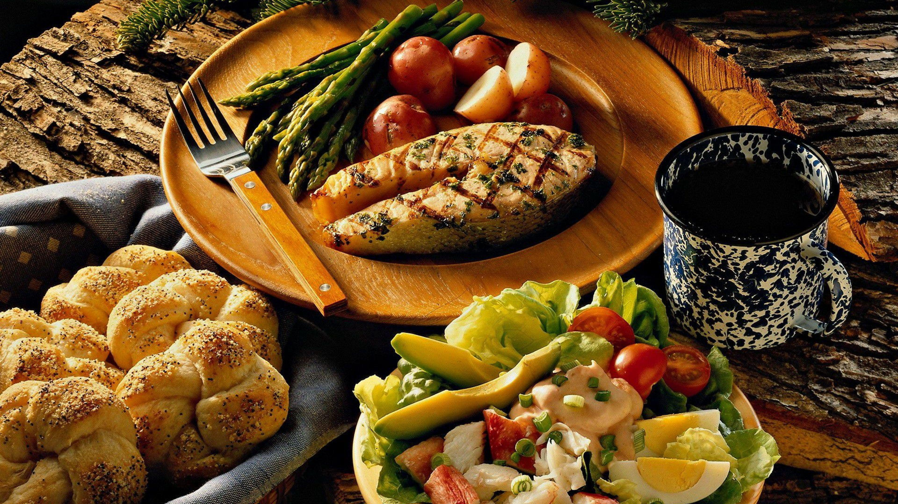

Grilled Chicken Salad
The recipe page you have open is very simple—it highlights Grilled Chicken Salad as the featured dish. It’s a light, healthy option that combines the smoky flavor of grilled chicken with fresh greens and vegetables, making it both nutritious and satisfying. This kind of salad is often recommended for those looking for a balanced meal that’s high in protein yet refreshing and easy to prepare
Preparation Time
- Preparation Time: 15 minutes
- Cooking Time: 20 minutes
- Total Time: 35 minutes
Ingredients
- Chicken breasts
- Lettuce
- Cherry tomatoes
- Avocado
- Bread rolls
- Black pepper
- Salt
- Olive oil
- Salad dressing
Instructions
- Wash and chop the vegetables properly.
- Season the chicken with salt and black pepper.
- Grill the chicken until fully cooked and golden brown.
- Slice the grilled chicken into pieces.
- Arrange the vegetables in a serving bowl.
- Place the chicken slices on top of the salad.
- Add dressing and serve fresh.
Nutrients
This dish is rich in protein, vitamins, minerals, and healthy fats. The grilled chicken provides protein that helps in muscle growth and body repair. Avocado contains healthy fats and fiber which support heart health and digestion. Fresh vegetables provide vitamins and antioxidants that improve immunity and overall health. The meal is balanced, nutritious, and suitable for a healthy lifestyle.